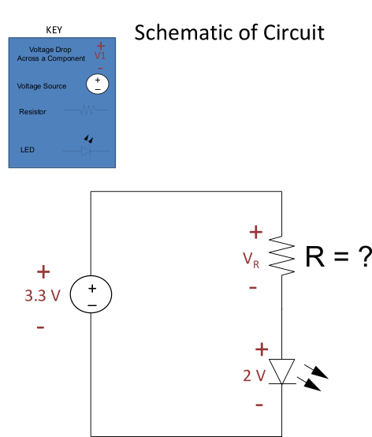
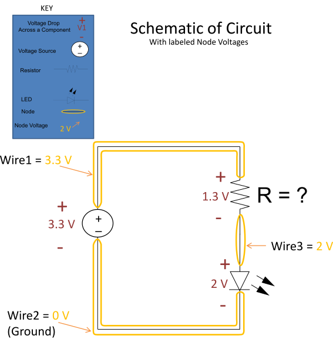

<meta name="author" content="Davis Cook"> 

<head>
   <script type="text/javascript" src="../SH/scripts/shCore.js"></script>
   <script type="text/javascript" src="../SH/scripts/shBrushmpide.js"></script>
   <link type="text/css" rel="stylesheet" href="../SH/styles/shCoreDefault.css"/>
   <script type="text/javascript">SyntaxHighlighter.all();</script>
</head>

<cf_Box Color="White" NoMargins="1">
<!--This is a comment-->
  <table class="TBLAYOUT" style="width:100%;" cellpadding="0">
    <tr><!--tr is a table row -->
		<td width="50%" align="center"><!--td is a table table cell -->
		<span class="TB-PROJECTTITLE"><!-- span lets you apply class properties to what is encased -->
			Project 3:<br/>
			Choosing a Current Limiting Resistor
		</span>
      </td>
    </tr>
  </table>
  
  
    <table class="TBLAYOUT" style="width:100%;" cellpadding="0">
	<tr>
      <td valign="top">
      	<p><!--P is a paragraph tag-->
          <span class="TB-H1">Introduction</span> <br/><br/>
          <span class="TB-BODY">
			Current limiting resistors are placed in a circuit to ensure that the
			amount of current that flows does not exceed what the circuit can
			safely handle.  When current flows through a resistor, there is, in
			accordance with Ohm's Law, a corresponding voltage drop across the
			resistor.  This reduces the amount of voltage that can appear across
			other components that are in series with the resistor (again, when
			components are "in series," the same amount of current flows through them). We want to pick a resistor to place a in series with the LED to that causes a 2 V drop across the LED.  
			We can figure out how big of a resistor we need by modeling our circuit with a schematic (see Fig. 1).
			</span>
			<div align="center">
				 
				<div class="TB-FIGURES">Fig. 1. Circuit Schematic Model</div>
			</div> <br/>
			<span class="TB-BODY">
			            In Fig. 1. we represent the chipKIT board as a voltage source with a 3.3 V voltage drop across it.
						It is assumed voltage sources in general will automatically supply the amount of current needed for
						the circuit. To ensure the LED has a 2 V voltage drop we need to figure what V<sub>R</sub> is. To do
						so it is a good idea to figure out the voltage each Node (Wire) is at. This way we can take the 
						differences and find the voltage drop for across a component or across a group of components.
						It is easiest to start by assuming the negative side of the voltage source makes its corresponding 
						Node zero volts (refer to Fig. 2.).  
			</span>
			<div align="center">
				 
				<div class="TB-FIGURES">Fig. 2. Schematic With Node Voltages</div>
			</div> <br/>
			
			
			<span class="TB-BODY"> <!--this is a comment -->
				With the Node voltages labeled we can now calculate the voltage drops across the components. We are designing 
				our circuit so the voltage drop across the LED is going to be 2 V. The equation would be setup and solved as follows.<br/>
				2 V = (Wire3 Voltage) –  (Wire2 Voltage)<br/>
				Plug in the Value of Wire2 to get:  2 V = (Wire3 Voltage) –  0 V<br/>  
				Solving this equation we get:  Wire3 = 2 V.<br/>  
				<br/><br/>
				With Wire3 solved for we can calculate V<sub>R</sub>.<br/>
				V<sub>R</sub> = (Wire1 Voltage) –  (Wire3 Voltage)<br/>  
				Plug in the Values to get: V<sub>R</sub> = 3.3 V –  2 V
				So: V<sub>R</sub> = 1.3V
				<br/><br/>
				Having calculated the resistors voltage drop calculated we can now use Ohms Law to calculate the value of the resistor.<br/>
				The equation is 1.3 V = I*R. In the equation there are two unknown variables I and  R. We can make I and R any values we 
				want however we want however there are real-world consequences that need to be considered.<br/>  
				<br/><br/>			
      	</p>
      </td>
  </table>

  
 

 
  
  <table class="TBLAYOUT" style="width:100%;" cellpadding="0">
	<td valign="top">
      	<p><!--P is a paragraph tag-->
          <span class="TB-H1">Consequences of Choosing R</span> <br/><br/>
          <span class="TB-BODY">
            The variable R can be any number we want, but choosing R affects what variable I will be. This means that the current automatically 
			supplied by the circuit is dependent on the value we choose for R.<br/>  

			<br/>A small R value gives: 1.3 V / 1 &#8486  = 1.3 A<br/> 
			
			<br/>A Large R value gives: 1.3 V / 1000 &#8486  = .0013 A<br/><br/>
			
			Now consider the design limits of the circuit.  The chipKIT board can provided a max of 18 mA per 1 pinhole.  The LED can handle a max
			Forward current of 30 mA. This narrows down the range of possible resistor values that can be picked. The resistor value should be picked 
			so the current draw is safely below 18 mA and is still enough to light up the LED.  Be sure to pick a resistance value of a resistor you <b/>actually</b> have.<br/><br/>
			</span>
			</p>
		</td>
  </table>
 </cf_Box>
